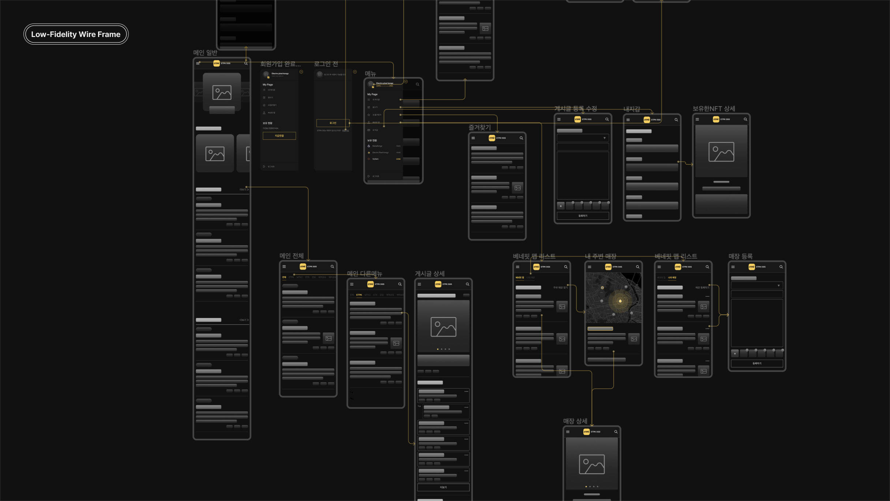
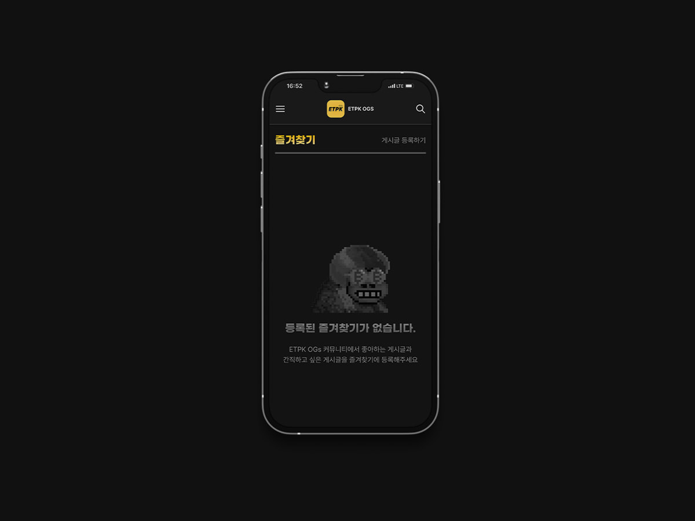

ETPK Ogs는 특정 NFT를 보유한 홀더에게 깊은 소속감과 유대감을
형성하기 위한 커뮤니티 사이트입니다. 핵심 타겟은 일반 사용자가 아닌
NFT보유자를 핵심 타겟인 특성에 맞게 홀더들에게만 주어지는 보상같은
경험이 중요하다고 생각했습니다.
니즈에 맞춘 추상적인 해결방안
구체적인 기획 내용을 없는 상태였고 전달받기도 어려운 상황이라는
판단이 됐습니다. 현 상황에 맞춰 클라이언트 니즈에 맞춰 추상적인
해결방안을 구상하여 진행하였습니다.
프로젝트 범위 설정
우선 솔루션에 맞춰 필요한 최소한의 페이지와 기능을 파악하고
개발자분들과 IA로 공유하였습니다. 이 과정에서 필요한 기능들에대한
구현 가능여부를 논의하고 이를 토대로 백엔드 개발자는 데이터 설계를,
저는 이해관계자들에게 공유 목적으로 Lo-fi 와이어프레임을
진행하였습니다.

누락된 부분, 모순점 발견
정리했던 솔루션을 토대로 와이어프레임과 플로우를 연결했습니다.
누락된 부분을 개선하고 모순점은 없는지 개발자와 크로스 체크를
진행했습니다. 이해관계자들에게 공유하여 클라이언트의 추가적인
아이디어를 수립할 수 있었습니다.
추가 아이디어 반영
플로우를 전체적으로 만족해주셨고, 추가적인 요청으로 음악 재생 기능을
요청해주셨습니다. 적절한 API를 찾을 수 있었고 다행히 비주얼 작업을
바로 진행할 수 있었습니다.
디자인 의도 공유
완벽한 가이드를 내놓고싶은 마음은 컸지만 기간이 넉넉하지 않았고
빠르게 제품을 개발해야하는 상황이였습니다. 최대한 신경써서
제작했지만 누락된 부분은 당연히 있다고 판단했고 저의 의도를
파악하는것에 중점을 뒀습니다.
니즈 중심의 기획
기획의 부재, 짧은 기간, 명확하지않은 니즈등 현 프로젝트 상황에
맞추어 최선의 방법으로 진행했습니다. 정성적인,정량적인 데이터를
근거로 디자인 할 수 있는 여유가 있지는 않았지만 최대한 이해관계자와
협업하는 실무자를 고려하여 진행하게되었습니다. 유저 중심의 디자인을
하지 못한 점이 아쉬운 부분이긴 합니다. 어쩌면 대부분의 상황이 어쩔
수 없이 상황에 기대어 디자인해야 할 상황이 많겠지만 그래도 협업에
중점을 두고 현 상황에 즉흥적으로 대응하면서 진행했던 점이 특별했던
경험이였습니다.
홀더전용 커뮤니티
홀더끼리 정보를 공유할 수 있는 커뮤니티 채널이 따로
마련되어있습니다. 인증마크를 표시하여 홀더간 구분할 수 있도록
구성하였습니다.
주변 홀더의 오프라인 매장을 찾을 수 있는 베네핏 맵
주변의 홀더들이 운영하는 오프라인 매장의 혜택을 공유받을 수 있는
베네핏 맵입니다.
ETPK 제품 노출
커뮤니티 홈에서 ETPK 제품을 상단에 배치하여 유저들이 가장 많이
접촉할 수 있도록 구성하였습니다.
플레이리스트
데스크톱에서는 플레이리스트를 반영하는데 문제가 없었지만
모바일에서는 모든페이지에서 한 공간을 차지하는것은 큰 문제로
다가왔습니다. 게시글을 읽고 작성하는데 있어서 큰 불편함을
예상됐습니다. 그래서 글로벌한 영역이면서 공간을 아낄 수 있는
메뉴안에 배치하였고 음악의 재생 상태는 메뉴 외부영역에서도 확인할 수
있도록 구성하였습니다.

프로젝트 마무리
현 상황에서 최선을 찾을 수 있는 프로젝트였습니다. 스스로
해결해가면서 배우는 점과 느끼는 점도 꽤 많았지만. 아무래도 완성도
측면에서 아쉬운 점이 많은 프로젝트입니다. 기획적인 부분을 신경쓰지
못하고 바로 디자인에 들어가야하는 아쉬운 상황이라서 배울 점이
있었습니다.